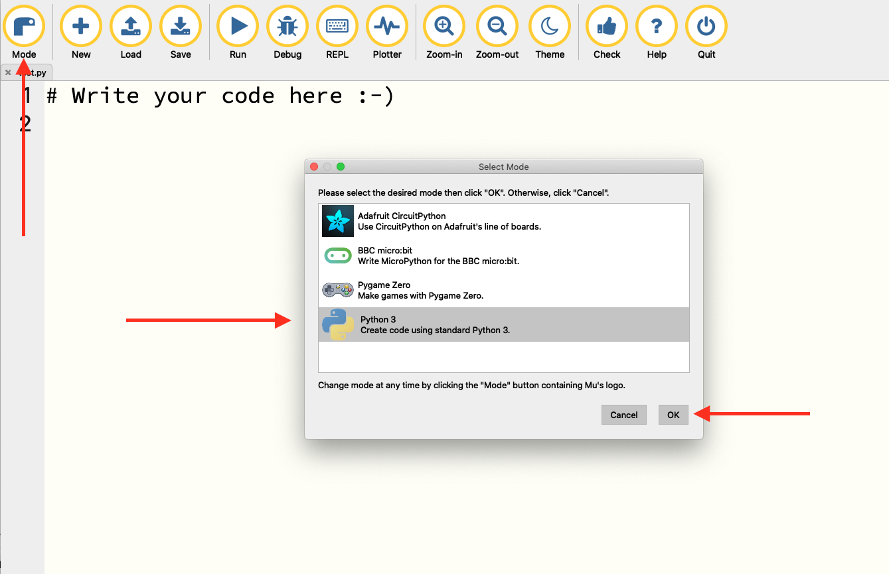
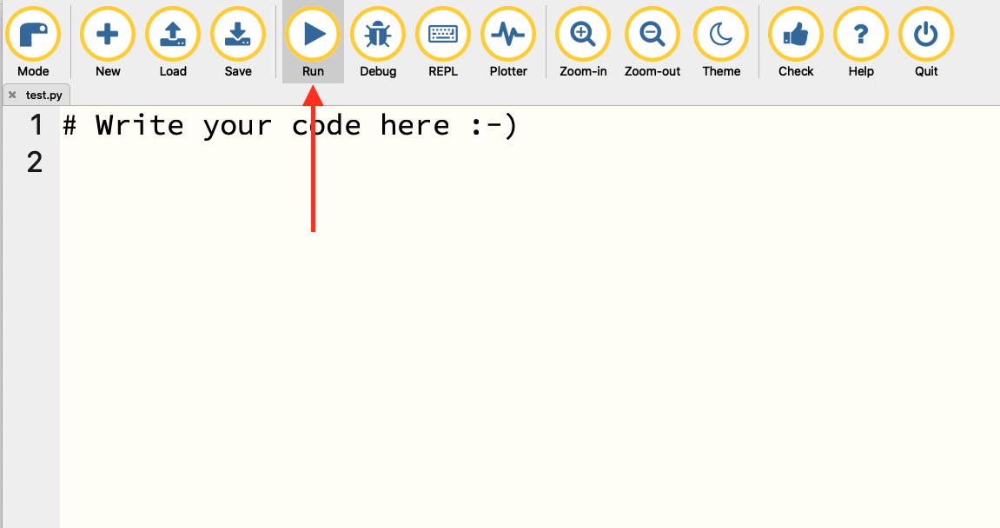
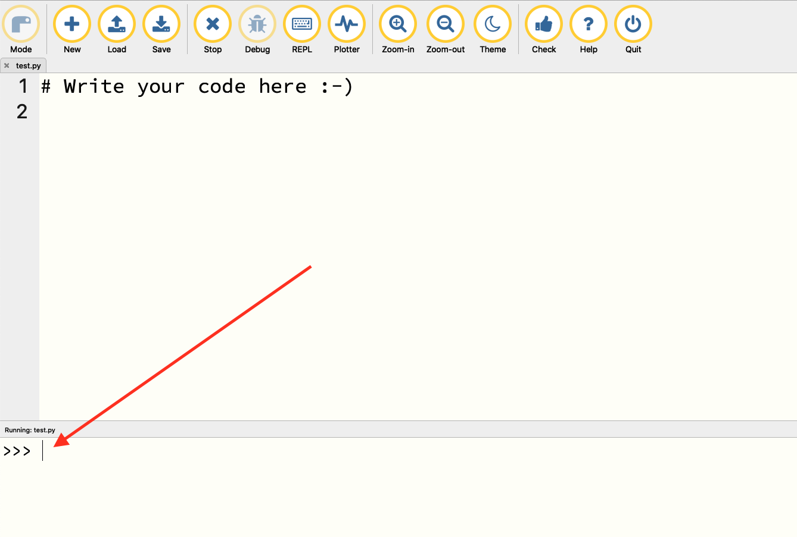

Chapter 2 Python basics
Python is a great language to learn if you’ve never seen code before, or if you have little experience with it. With a little bit of practice, you can get to reading someone else’s Python code and have a decent idea of what it is doing. There is a lot of code to borrow on the internet, and a fair number of times you can find what you need on a site or a message board.
But the copy and pray method of development is not a good plan. Better to learn some basics and grow into some knowledge.
The basics that you need to get started with Python – and by extension, Circuit Python – are:
- Variables
- Functions
- Loops
- Conditionals
- Error trapping
- Libraries.
It’s just six things, and we’ll go through each one here. As we go forward with making your board do things, we’ll highlight these concepts and how most of what we’re doing is just mixing them around in new and creative ways.
In the last chapter, you installed mu-editor. Open mu-editor, then click on Mode and choose Python 3.

Then, just click the Run button.

That should pop up a pane at the bottom of your window like this:

In that pane, next to the >>> you’ll be able to just type Python code and execute it. So let’s try some.
2.1 Variables
One of your first lessons is to not make things more complicated than you need. If you’ve been told that programming is hard, the truth is it can be, but it doesn’t have to be. And if you’ve been told that things are highly technical and you wouldn’t understand them, that’s a lie.
Most of programming is very simple. The complexity comes in what we want to do and how those things mix together. Fortunately for us, most of what we want to do is simple, using simple concepts and easy to understand ideas.
The variable is your first lesson in simple.
A variable is just a thing that stores stuff. That’s it. It could be a number. Or some text. It could be a whole list of numbers, the entire text of War and Peace, or every reading from one of our sensors. It can be anything in our computers, or on someone else’s in some cases.
Here’s where variables come into play.
First, python can act like a calculator. We can just add two numbers together. Try this in your terminal.
## 4Simple, right? We know the answer to this before we run it and, sure enough, Python gives us the right answer.
But what if we want to store the result of that math to use later? We use a variable. And in Python, variables are created with an equal sign. Type this in your terminal and hit enter.
Uh oh. Seems like nothing happend, right? We typed something and we got nothing. Well, let this be another lesson – code does exactly what you tell it to do, not what you want it to do. In this case, we told it to store 2 + 2 into a variable called number. We didn’t say show us the number. We didn’t say anything else. Just store it.
Want to see it? Type this an hit enter:
## 4This does what you think it does. It prints out (to the screen) your variable. This is really a function, which we’ll discuss in a bit, but any time you want to see the thing you’re working with, just print it.
In Python, how things like variables are formatted matters. Notice our numbers are just numbers: 2. A number, without any quotation marks, is automatically formatted as a number. To automatically format something as text, you put it in quotes. Type this:
## I am learning PythonWhat happens if you don’t put it in quotes?
You get an invalid syntax error. That’s because without the quotes, Python thinks I, am, learning and Python are variable names.
Where this gets hard is numbers that aren’t numbers. We looked at something simple like 2+2. But what happens when you have a zip code? Is a zip code a number? The answer is no – you would never do math with a zip code. So 2 is a number, "2" is text. What happens if you try to add text together?
## '22'If your reaction is … uh, what? … there’s something you need to know. In Python, + between two numbers means add, but + between two pieces of text means merge these two pieces of text together. So first – see that "2"+"2" equals '22'. But see the single quote marks around them? That means that 22 is really "22" or text, not a number.
2.2 Functions
You’ve already used a function when you printed something out. The definition of a function is a piece of code that takes input and returns output. That’s it. Input. Output. Your print() function took in your variable and printed it out.
The basic rule of thumb on functions is that if you are going to do it twice, you should make it a function. Let’s make a simple function to convert Celsius to Fahrenheit. To convert Celsius to Fahrenheit, you take your number, multiply it by 1.8 and then add 32. We can do this with a calculator easily. Some of you might be able to do it in your head. But what if you wanted to do it every 10 seconds? You want a function.
To create a function, you define it with def, give it a name, and then name your input value.
An important note about Python: Python has what is called Meaningful White Space, meaning indentations matter. Code that is indented under code that isn’t indented is considered part of that code – a continuation of it. Then, when the code returns to not being indented again, the block of code is considered done. **In Python, indentations are made with four spaces, NOT tabs.
Our function will create a variable called fahren, short for Fahrenheit, and then do the math. Our output will print the Fahrenheit value.
def convert(temp):
fahren = (temp * 1.8) + 32 # note the four spaces
print(fahren) # note the four spacesNow, to use it, we can just call convert and give it a number. What is 28 Celsius in Fahrenheit?
## 82.4So 28 Celsius is 82.4 Fahrenheit. A nice warm day.
Later, we’ll explore functions that other people have made for us when we talked about external libraries. The important things to remember – functions take input and provide output.
2.3 Loops
Loops are the most powerful feature in programming. Just about every website and app that you use in a day are, at their core, a loop. Loops repeat a series of commands on a piece of data until either there is no more data to work with or, in some cases, forever. For example, let’s use Instagram. When you log into Instagram, a request goes to Facebook’s servers and gets the latest photos from your friends and the people you follow. Those photos are then put into a list. Your list might have a few new photos or it may have hundreds. We don’t know until we look. Then, on your phone, those photos appear, one after another, until the list runs out (when another request is fired off, bringing you more photos in an attempt to keep you there longer).
That’s a loop.
So first, let’s create a list of Celsius readings. Lists in Python are created with brackets:
One of the most beginner friendly parts of Python is the simplicity of loops. When you see it, you can pretty much read it right away. There’s two kinds of loops. Let’s start with the for loop. In English, what Python’s for loop code is saying is this: For each instance of a thing in a list of things, do this. Here’s what that looks like in code:
## 20.2
## 20.8
## 21.1
## 20.9
## 20.7The first parts of that code – reading – can be anything we want it to be.
## 20.2
## 20.8
## 21.1
## 20.9
## 20.7The second part – allofmyreadings – is our list that we created. The second part must exist somewhere before we run the loop. A good coding habit to get into? Name things what they are. Don’t get cute. And don’t create things difficult to spell. Don’t name things single letters. Give it a real name. So the first example is good, the second example, while dear to my heart, is bad.
So now we can combine our function and our loop.
## 68.36
## 69.44
## 69.98
## 69.62
## 69.259999999999992.4 Conditionals
Conditionals are where you can make choices about things. If this is true, do this, otherwise, do that. This is particularly handy for classifying data as one thing or another based on a rule.
So let’s pretend for a second that in our list of readings, we have a threshold. Let’s say that if the temperature rises to 21 C or more, we call that Warm. If it’s not 21 C, then it’s Not Warm.
We can label those using conditionals and operators like > and <.
## Not Warm
## Not Warm
## Warm
## Not Warm
## Not WarmThe other kind of loop is the while loop. They are similar, in that they repeat commands, but they do it until a condition isn’t true. To read them, they say while this condition is true, do this thing until it’s not. If you don’t set a condition that could be false, the loop will run until you stop the code by hand.
For computers, this can be trouble – an infinite loop can become a stuck process and consume resources you didn’t mean to consume. In sensors, it can be exactly what we want – take readings until I pull the plug. For purposes of this tutorial, I’m not going to go into much depth here – we’ll have a chance to do it much more when we get to coding the board. But here’s what they look like.
And if I were to run that, it would print Hello over and over and over and over until I made it stop (which wouldn’t be long, because it would get annoying quickly).
Combining concepts
We can do this exactly the same way by adding variables into it. See the difference here?
## Not Warm
## Not Warm
## Warm
## Not Warm
## Not WarmDoes the same thing, but uses a variable – label – to store the decision of the conditional. These are tiny steps toward creating complex code using very simple ideas.
2.5 Error trapping
One issue you will run into with sensors is when they don’t work. Things go wrong. Some sensors are quite “noisy”, which is a way of saying the readings can bounce all around. Sometimes they don’t do what you expect them to do. So we have to build code that can tolerate problems.
We can do that with error trapping. Simply put, error trapping is like saying “Try this, and if it works, do this, else, do this.” And because Python prizes readability, you create error tolerance by using try.
Let’s create a new list of readings from our thermometer, but this time, one of them is going to be an error.
Python lists don’t really care what it is in them. You can store numbers, text, even other lists in a list and Python will store it dutifully. The problem is when you loop through that list and expect them to be all one thing. For example, let’s apply our Fahrenheit converter to each reading in our list.
## Error in py_call_impl(callable, dots$args, dots$keywords): TypeError: can't multiply sequence by non-int of type 'float'
##
## Detailed traceback:
## File "<string>", line 2, in <module>
## File "<string>", line 2, in convertPython error messages aren’t the easiest thing to read – they’re orders of magnitude better than many languages, but that’s a low bar to get over. But we can see there is a giant hint in the first word of the error message: TypeError. That leads me to believe there’s a data type problem, which we know is true.
To trap that, we need to use try and except. Except, in this case, means what to do if it doesn’t work.
for reading in newreadings:
try: # try doing what we want done
convert(reading)
except: # here's what to do if it breaks
continue # this means just skip it, move along## 68.36
## 69.44
## 69.62
## 69.25999999999999Now it works, but our choice of using continue means we get four readings, not five. Sometimes, that’s an acceptable outcome. If it didn’t work, we don’t want it. We can do other things.
for reading in newreadings:
try: # try doing what we want done
convert(reading)
except: # here's what to do if it breaks
print("Ooops") ## 68.36
## 69.44
## Ooops
## 69.62
## 69.25999999999999It’s generally a bad idea to mix data types, so maybe “Ooops” isn’t a good choice. Some data encodes missing data as an impossible number, something like 99999. If it’s 99999 degrees F, we’ve got much bigger problems than our sensor not working correctly for a reading.
for reading in newreadings:
try: # try doing what we want done
convert(reading)
except: # here's what to do if it breaks
print(99999) ## 68.36
## 69.44
## 99999
## 69.62
## 69.25999999999999Then we know, in our data analysis, to filter those out or annotate those readings.
The point being, you have choices on how you handle errors. You need to think through what your application requires. Do you need to know what happens on each reading, regardless if it works or not? Or is a missing reading here and there not important? Think it through before you start coding.
2.6 Libraries
The strength of any programming language is the quality of available external libraries. Python has many, many contributed libraries to do a mind boggling number of tasks. Many of them are incorporated into something called the standard library – a common set of high quality libraries that aren’t part of the base language but are so good that everyone gets them. Circuit Python has theirs, and we’ll get into those soon, but using libraries is an important concept to understand.
Good news: It’s pretty simple.
There’s two ways to use an external library – you can import it whole, or you can import what you need.
Let’s say we need an average temperature of our readings for our error problems. Instead of a blank or a fake number, we’re going to replace that error with the average of all readings. In a controlled environment, where the values aren’t going to change wildly unless there’s a problem, this might be a good solution to a touchy sensor.
So we could do this with code we know. We can add up all the values in the list, then divide them by the number of items in the list. But we aren’t the first people to need this. This is a common thing, so any time we run into something common like this, your first thought should be “I wonder if there’s a library that does this.”
Python has a library called statistics that has a mean function in it.
The import it whole way involves importing the library, then using dot notation to get to it. Think of dot notation like a line that connects a library to a function within it. It looks like this:
## 20.74So the average temperature in my list of readings is 20.74.
Purists will tell you that importing the whole library for one function is inefficient and bad form. So we can import the one function and use it like this:
## 20.74Two different ways, same result.
We’ll make use of external libraries when we start with Circuit Python. The important lesson here is that you can import a library and use functions within it.
2.7 Putting it all together
Let’s combine some ideas. See if you can do this yourself.
- We’re going to loop through the list of temperature readings below.
- We’re going to convert them from Celsius to Fahrenheit using our function.
- If that doesn’t work, we’ll substitute the average temperature using try/except.
- Then, we’ll print it out to the screen.
First things first, what happens if we try to get an average of that list?
## Error in py_call_impl(callable, dots$args, dots$keywords): TypeError: don't know how to coerce float and str
##
## Detailed traceback:
## File "<string>", line 1, in <module>
## File "/Users/mwaite3/Library/r-miniconda/envs/r-reticulate/lib/python3.6/statistics.py", line 312, in mean
## T, total, count = _sum(data)
## File "/Users/mwaite3/Library/r-miniconda/envs/r-reticulate/lib/python3.6/statistics.py", line 147, in _sum
## T = _coerce(T, typ) # or raise TypeError
## File "/Users/mwaite3/Library/r-miniconda/envs/r-reticulate/lib/python3.6/statistics.py", line 198, in _coerce
## raise TypeError(msg % (T.__name__, S.__name__))Uh oh. TypeError again.
So we need to remove non-numbers from our list.
There’s a lot of ways to do this, but one way is to use a loop and a try/except. We’ll create a new list, called cleanreadings and we’ll use a new bit of code – append – to add things to that new list. Then, we loop.
In the try/except, we’ll try to do something that will only work with numbers – like convert it to a floating point number or a number with a decimal point. If that succeeds, then add the number to the list. Otherwise, move along.
Then we can calculate the mean and save it as a variable.
cleanreadings = []
for reading in testreadings:
try:
float(reading)
cleanreadings.append(reading)
except:
continue
## 20.3
## 20.6
## 20.1
## 21.1
## 21.0
## 20.9
## 21.2Now we can do our conversion.
## 68.53999999999999
## 69.08000000000001
## 68.18
## 69.98
## 69.80000000000001
## 69.33714285714285
## 69.62
## 69.33714285714285
## 70.16